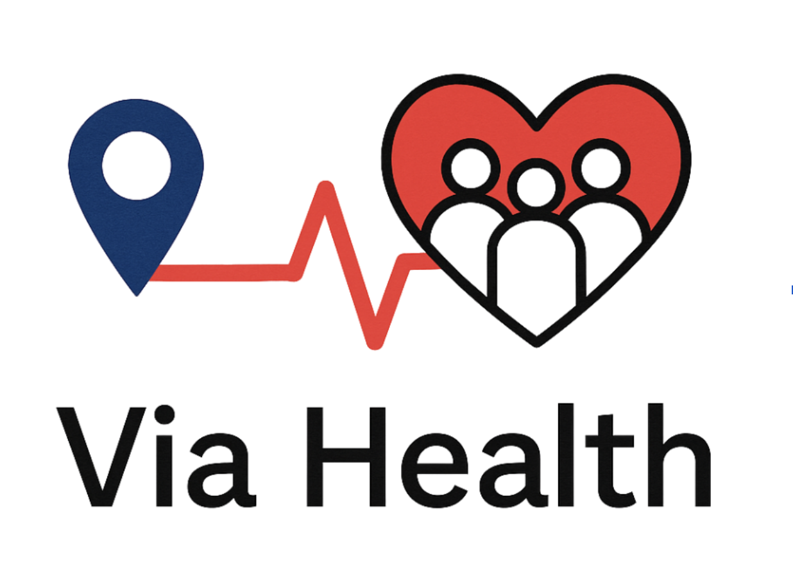

Explore Pathways
making decisions is tough...but so are you!
we're here to help you make them.
Find a mentor!

Get real guidance from people who've been there—when it actually matters.
Should I pursue this path or switch directions?
Do I apply now, or take time to strengthen my application?
What experience actually matters for this field?
How do I choose between two different healthcare paths?
Am I on track—or missing something important?